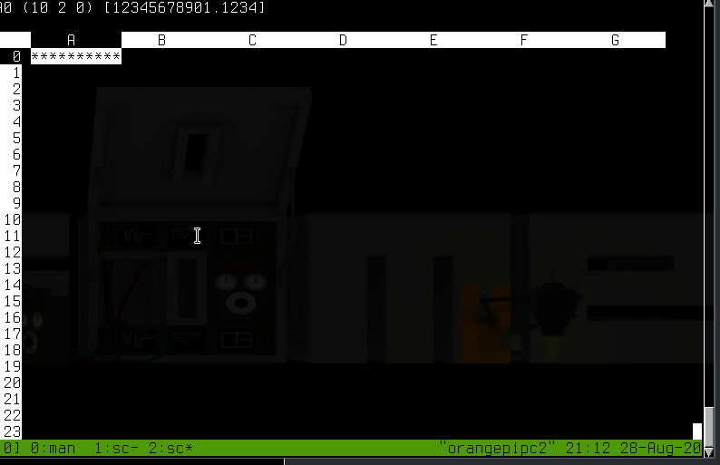

sc:命令行里的电子表格
Linux下的电子表格软件非常多，比如国产的WPS演示、LibreOffice Calc、Gnumeric、KSpread、Xspread。 但是这写软件都是运行在图形环境下的。而今天介绍的sc跟那些妖艳是不一样的，它运行在终端环境中。
安装
常见Linux发行版的仓库中都有该软件包，因此可以直接使用包安装工具安装
sudo apt install -y sc
界面说明
直接运行 sc 命令就启动了 sc 软件。其界面如下所示：
可以看出其界面跟常见的电子表格应用非常类似，也是用字母表示列，用数字表示行，一个单元格的位置由表示列的字母和行的数字组成，比如B2表示第2列第3行这个单元格。
而一个输入了内容的sc界面如下所示：
注意到第一行的 D25 (10 2 0) [1.23456],它的意思是：
D25为当前单元格的位置，光标目前处于D列25行所在的这个单元格处(10 2 0)为当前单元格的现实格式，其中第一个10表示单元格显示10位，多于10位的内容会显示为多个*; 第二个2表示数字保留小数点后2位; 第三位用来表示是否使用科学计数法来表示数字，0表示不用，1表示用。[]表示该单元格的值为数字，1.23456为实际的值。若该单元格中的值为字符串，则该字符串会被引号应用起来，且在字符串前会有一个表示对齐方式的字符（<表示左对齐、>表示右对齐、|表示中间对齐）
常见操作
输入数据
- 按下
=表示输入数字(10)、其他单元格引用(D5)或是公式(@sum(A0:A5) - 按下
<表示输入左对齐的字符串 - 按下
>表示输入右对齐的字符串 - 按下
\表示输入中间对齐的字符串 - 按下
{表示调整当前单元格的字符串为左对齐 - 按下
}表示调整当前单元格的字符串为右对齐 - 按下
|表示调整当前单元格的字符串为中间对齐
移动光标
sc的很多操作借鉴了vi的快捷键，你可以通过
h/左箭头将光标移动到左边的一个单元格j/Ctrl+n/下箭头将光标移动到下边的一个单元格k/Ctrl+p/上箭头将光标移动到上边的一个单元格l/右箭头将光标移动到右边的一个单元格g位置将光标直接跳转到指定位置的单元格Ctrl+b上一页Ctrl+f下一叶
添加/删除单元格
ir在光标上面插入一行空单元格ic在光标左边插入一列空单元格dr删除并复制光标所在的那一行单元格dc删除并复制光标所在的那一列单元格dd删除并复制光标所在的单元格yr复制光标所在行yc复制光标所在列yy复制光标所在单元格pr将复制内容粘贴为上一行的内容pc将复制内容粘贴为左一列的内容pp将复制内容粘贴在当前单元格
修改单元格内容
我们可以通过输入数据的方式来直接覆盖原单元格内容。但若原单元格中的内容很复杂，而我们只是想要对其进行一些微调的话，那么
- 若原单元格为数字、单元格引用或公式，则按下
e键进入修改模式，修改时的操作方式跟vi一致 - 若原单元格为字符串，则按下
E键进入修改模式，修改时的操作方式跟vi一致
设置单元格格式
通过 f 键可以对单元格的显示格式进行设置，按下后进入格式调整模式，在这个模式下
- 按下
l或右方向键可以调大该列单元格显示的宽度 - 按下
h或左方向键可以调小该列单元格显示的宽度 - 按下
k或上方向键可以调大该列单元格的小数点精度 - 按下
j或下方向键可以调小该列单元格的小数点精度
调整的过程会实时调整单元格的显示，调整好后按下 回车 退出格式调整模式。

隐藏行列
当编辑大型的表格时，常常会需要隐藏一些多余的行和列。这些操作可以通过 Z (zap) 命令来实现。
Zc隐藏光标所在的列Zr隐藏光标所在的行
要显示之前隐藏的行列时，则可以通过 s (show) 命令来实现。
sc显示隐藏的列sr显示隐藏的行
拷贝/删除单元格内容
x键可以删除单元格的内容m字母表示将当前单元格的内容存入字母表示的寄存器中。c字母表示从字母表示的寄存器中拷贝出单元格内容。
公式
按下 = 键后不仅可以输入数字，还能输入公式，例如要计算B4和B6的值那么可以输入 =B4+B6.
在公式中我们还可以使用函数，例如输入 =@sum(A1:A10) 就会将A1到A10的值进行累加了。
sc内置有许多常见的公式，详情可以运行 man sc 来进行查看。
保存/加载工作簿
- 使用
P "/tmp/file.sc"来将内容保存到/tmp/file.sc文件中 - 使用
G "/tmp/file.sc"来将当前内容清空，并加载/tmp/file.sc文件